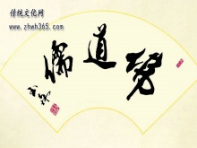
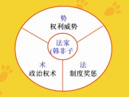
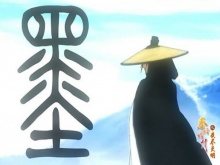

儒家
荀子是战国时代的儒学宗师，也是当时最有学术成就和社会影响的思想家之一。
- 浅谈传统武德的儒家文化内涵
- 颇具人文情怀的儒家文化
- 儒家文化的精髓体现
- 谈儒家文化与财富伦理
- 谈儒家的安身立命之道
道家
道家以“道”为核心理念而得名，最早见于西汉历史学家司马谈的《论六家要旨》，当初也叫道德家。
- 道家在思想文化史上的地位和影
- 老子
- 道家的主要著作
- 道家自然哲学对中国文化的影响
- 道家思想与书法艺术
释家
中国人常说，“佛法无边“，”佛“这个字是从印度梵文翻译过来的，它的意义是‘智慧’
- 佛教对中国传统艺术的影响
- 佛教对中国传统文学的影响
- 佛教对中国传统思想的影响
- 浅析佛教与音乐的关系
- 玄奘

- 中国传统文化的三大主干——儒佛...
- 百家争鸣之局面形成的历史渊源
- 先秦法家彪炳寰宇的思想价值
- 阴阳家
- 韩非子

- 法家的治国之道——儒佛...
- 影响巨大的墨家创始人——墨子
- 谈法家思想的现实意义
- 名家之开山鼻祖——惠施
- 百家争鸣
- 法家思想之贡献
- “老庄”之庄子
- 墨家衰落之其与社会历史发展趋势...
- 易被忽略的名家

- 谈墨家的思想主张
- 先秦法家震古烁今的历史价值
- 墨家的“节用”思想与人性需要之...
- 商鞅